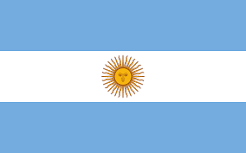

1812: Bandera de Macha e Insignia Belgraniana (Orígenes Patrios)
Diseñada por Manuel Belgrano en 1812, la Bandera de Macha es uno de los testimonios físicos más antiguos del símbolo patrio. Utilizada por el Ejército del Norte en la guerra de independencia, fue hallada años después en Bolivia, siendo un emblema fundamental de la gesta libertadora.
1818: Bandera de las Provincias Unidas (Directorio de Pueyrredón)
En febrero de 1818, el Congreso aprueba la inclusión del Sol de Mayo en la bandera. Durante el mandato de Juan Martín de Pueyrredón, se reglamentó un diseño de uso mayoritariamente militar y naval que incorporaba ocho estrellas doradas rodeando al sol central, representando a las provincias unidas de la época.
1830 - 1852: Bandera de la Confederación Argentina (Azul Intenso)
Durante el periodo de la Confederación Argentina, bajo el liderazgo de Juan Manuel de Rosas, el azul celeste original fue reemplazado por un azul oscuro o azul turquí para diferenciarse del color utilizado por el Partido Unitario. El Sol de Mayo central se mantuvo como símbolo de la identidad e independencia nacional.
Bandera Oficial de la República Argentina (Celeste y Blanca)

Compuesta por tres franjas horizontales de igual tamaño (dos celestes y una blanca en el centro) y el Sol de Mayo bordado o estampado en el medio. Es el símbolo supremo de la nación argentina, cuyos colores celestes y blancos representan la soberanía, la libertad y la unidad del pueblo.